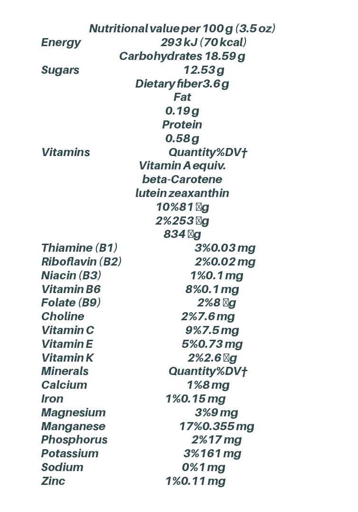

Nutrition
Compared to apples, persimmons have higher levels of dietary fiber and some dietary minerals,[13] but overall are not a significant source of micronutrients, except for manganese (17% of the Daily Value, DV) and provitamin A beta-carotene (10% DV, table for raw Japanese persimmons per 100 gram amount). In a 100 gram amount, raw American persimmons are a rich source of vitamin C (80% DV) and iron (19% DV).
